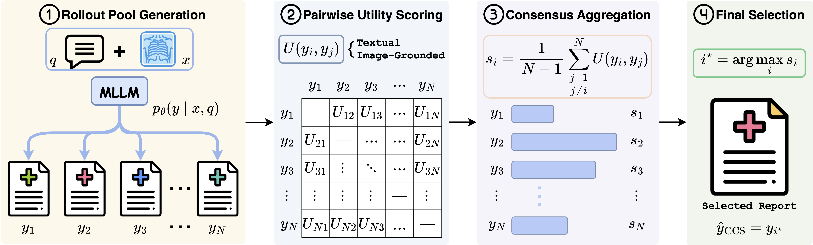
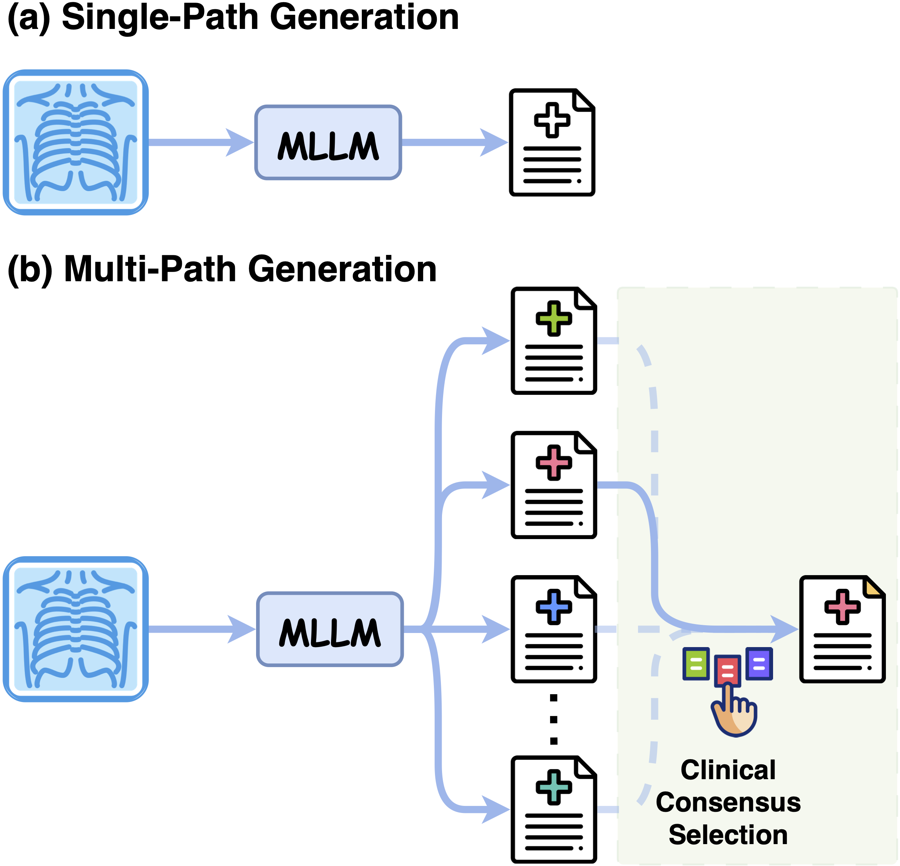
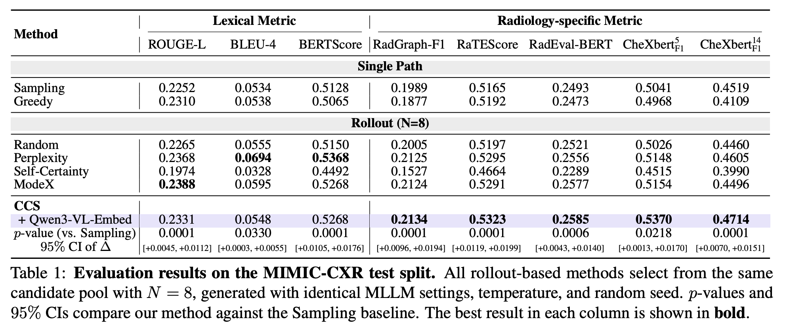
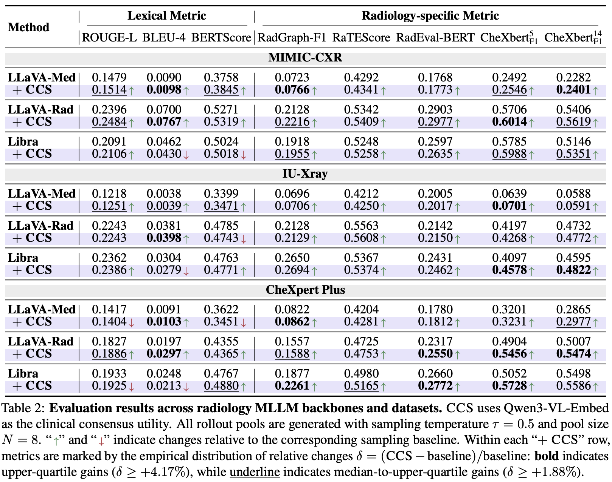
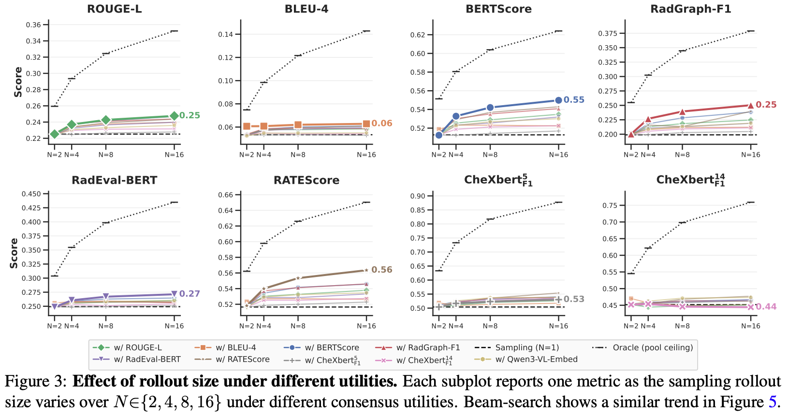
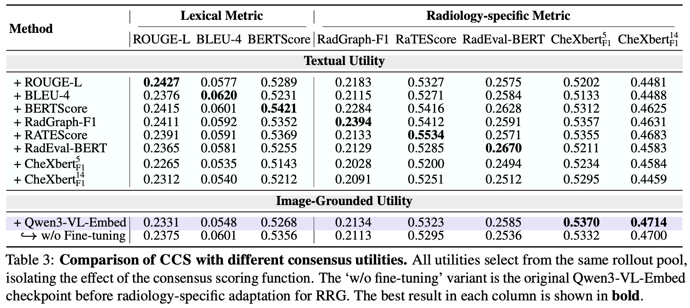
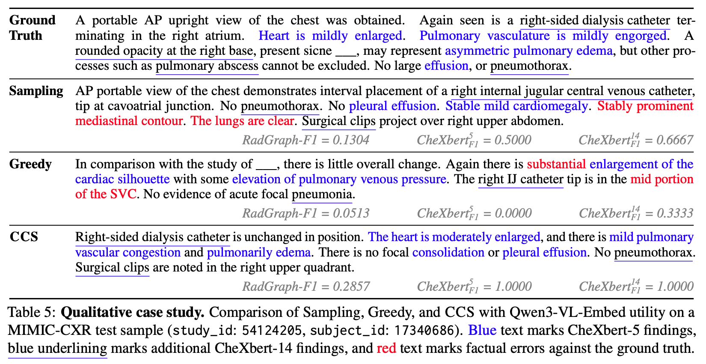

Radiology report generation (RRG) is commonly formulated as a single-path generation task, where a multimodal large language model (MLLM) produces one decoded report as the final output. While recent progress has largely been driven by scaling training data, model capacity, and retrieval mechanisms, improving report quality at inference time remains underexplored. In this work, we observe that fixed radiology MLLMs often generate clinically stronger reports elsewhere in their candidate pool than the one selected by default decoding, suggesting that inference-time decision making remains an overlooked bottleneck. To address this, we propose Clinical Consensus Selection (CCS), a decoder-agnostic inference-time selection framework that samples multiple candidate reports and selects the one with the highest clinical consensus across the rollout pool. CCS unifies text-based utilities with a radiology-adapted utility computed by an image–report-trained multimodal embedder, which measures candidate agreement beyond surface-level textual similarity. Across three datasets and multiple radiology MLLMs, CCS consistently improves inference-time performance over single-path decoding and generic Best-of-N baselines, with particularly clear gains on clinical metrics. Further analysis shows that image-grounded utility forms a selection axis distinct from textual consensus and that substantial headroom remains for improving RRG at inference time.


Most radiology MLLMs commit to a single decoded report token by token, so one unfavourable step can omit a finding or assert one unsupported by the image, with no way to recover. Yet a fixed model often places clinically stronger reports elsewhere in its candidate pool — the bottleneck is not what the model can generate, but which candidate it commits to.
Clinical Consensus Selection reframes this overlooked decision at inference time. Rather than retraining models or relying on retrieval corpora, CCS samples a pool of candidates and selects the one that best agrees with the rest under both textual and image-grounded clinical signals — keeping fluency while staying faithful to the radiograph.
Clinical Consensus Selection (CCS) is a reference-free, decoder-agnostic inference-time framework that reframes RRG as candidate selection — no retraining and no extra parameters. Given a chest radiograph, CCS proceeds in four stages:
By aggregating pairwise clinical consensus across the rollout pool, CCS turns a wasted set of discarded samples into a reliable selection signal. It is fully model-agnostic and integrates seamlessly with state-of-the-art radiology MLLMs.


On MIMIC-CXR, CCS improves all radiology-specific metrics over Sampling (e.g. RadGraph-F1 0.1989 → 0.2134, CheXbert-F1⁵ 0.5041 → 0.5370), with gains statistically significant (p < 0.05). Unlike generic Best-of-N selectors (Self-Certainty, ModeX) that give inconsistent or negative clinical gains, CCS improves consistently across all backbones and datasets.


Per-label F1 shows CCS recovers abnormal findings that text-only consensus suppresses — confirming that image-grounded utility is a selection axis distinct from textual consensus, with substantial headroom still remaining for improving RRG at inference time.

On a real MIMIC-CXR case, single-path decoding asserts factual errors (false “clear lungs”, a mislocalised catheter), whereas CCS selects a more image-grounded report (CheXbert-F1⁵ 1.0000 vs Sampling 0.5000). By favouring the candidate that agrees with the rest of the pool, CCS suppresses isolated hallucinations and surfaces findings the default decode misses.
@article{zhang2026ccs,
title={CCS: Clinical Consensus Selection for Radiology Report Generation},
author={Zhang, Xi and Li, Yingshu and Meng, Zaiqiao and Lever, Jake and Ho, Edmond SL},
journal={arXiv preprint arXiv:2605.30131},
year={2026}
}
This website is adapted from Nerfies, licensed under a Creative Commons Attribution-ShareAlike 4.0 International License.